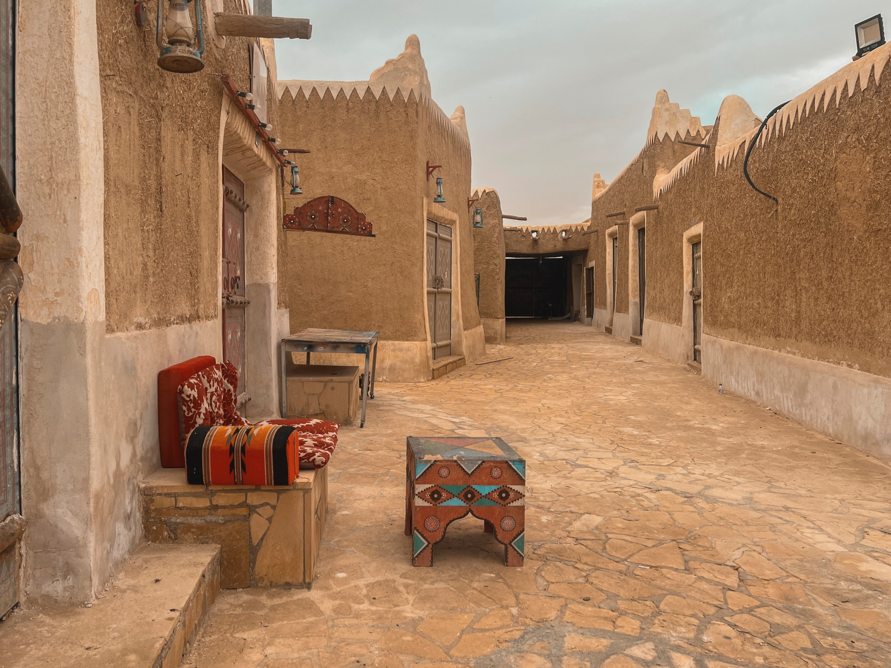

What is Al Midnab ?
Muznib, in the province of Qassim, is one of the most important ancient towns in the Kingdom. It contains the ancient Council Market, and locally this town is known as Deira District. This small town may only be two km2, but it overflows with architectural treasures, home to over 384 houses with historic value. It is a group of old mud buildings that the governorate municipality restored the old market in, and it contains 27 shops. It is considered an example of traditional architecture in the Nejd region, with narrow streets and adjacent buildings. 25 kilometers on the south east of Unaizah lays the village of Mithnab that was restored to a complete traditional village of about 2 square kilometers and more than 384 houses, including a majlis market that won the HRH Prince Sultan bin Salman’s award for preservation of traditional architecture.
Best To Visit
Direction
WebsiteFood info
McDonald's Corporation is an American multinational fast food chain, founded in 1940 as a restaurant operated by Richard and Maurice McDonald, in San Bernardino, California, United States.
Direction
WebsiteInfo about lakes
It's a delightful park nestled around a pristine lake, and it's truly a hidden gem. The shimmering lake serves as the centerpiece, offering a picturesque backdrop for leisurely strolls or picnics with loved ones. The park boasts a charming atmosphere, with well-maintained walking trails that wind through lush greenery and vibrant flower gardens. You can relax on the lakeside benches, enjoying the gentle breeze and the soothing sounds of nature. For those seeking a bit more adventure, there are paddleboat rentals available, allowing you to explore the tranquil waters at your own pace. The park also hosts various events and activities throughout the year, such as outdoor concerts and art exhibitions, creating a vibrant community atmosphere

Direction
Info about Mountain
Khartoum Park is one of the parks of Al-Muznib Governorate and is located in the eastern part of the governorate at an altitude of 1611884 m2. Khartoum Park is distinguished by its historical and heritage status in addition to being a tourist destination and outlet for the people of the governorate and even the people of Qassim. The park is also distinguished by its pleasant atmosphere, especially at night due to its altitude.Usually, during every holiday, there are occasions, events and activities in the governorate, and the park has a large share of these activities. For example, in the “Together Against Terrorism and Deviant Thought” campaign, the park witnessed a large gathering of people from the Qassim governorates, with the attendance of the Green Falcons Band and the organization and participation of the Al-Muznib Tourism Committee and the Al-Muznib Youth Team.